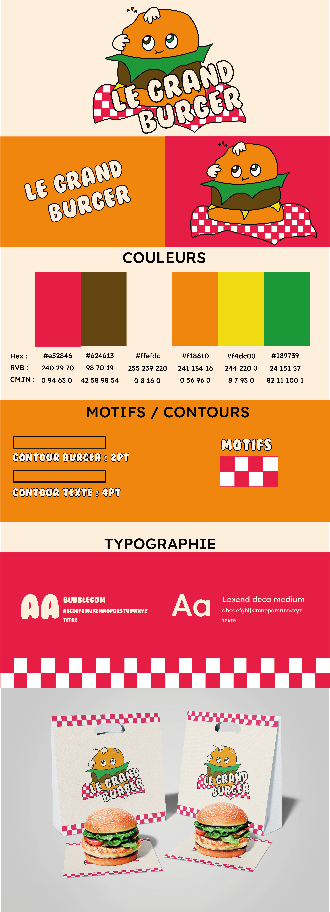
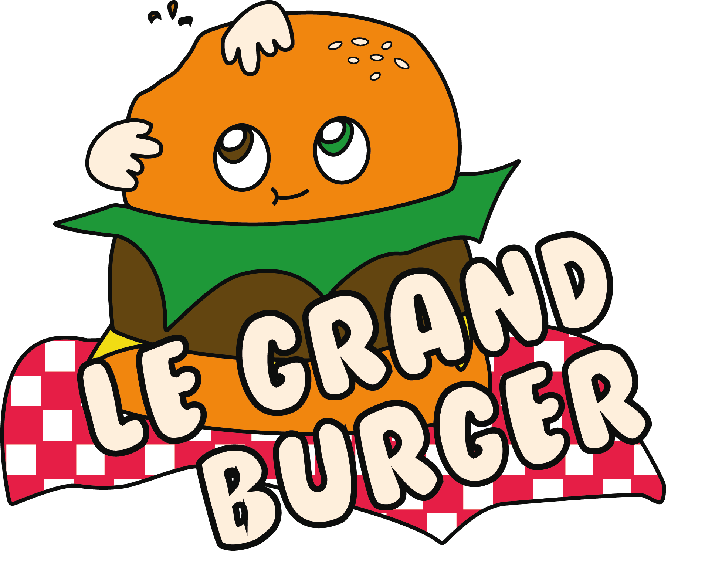
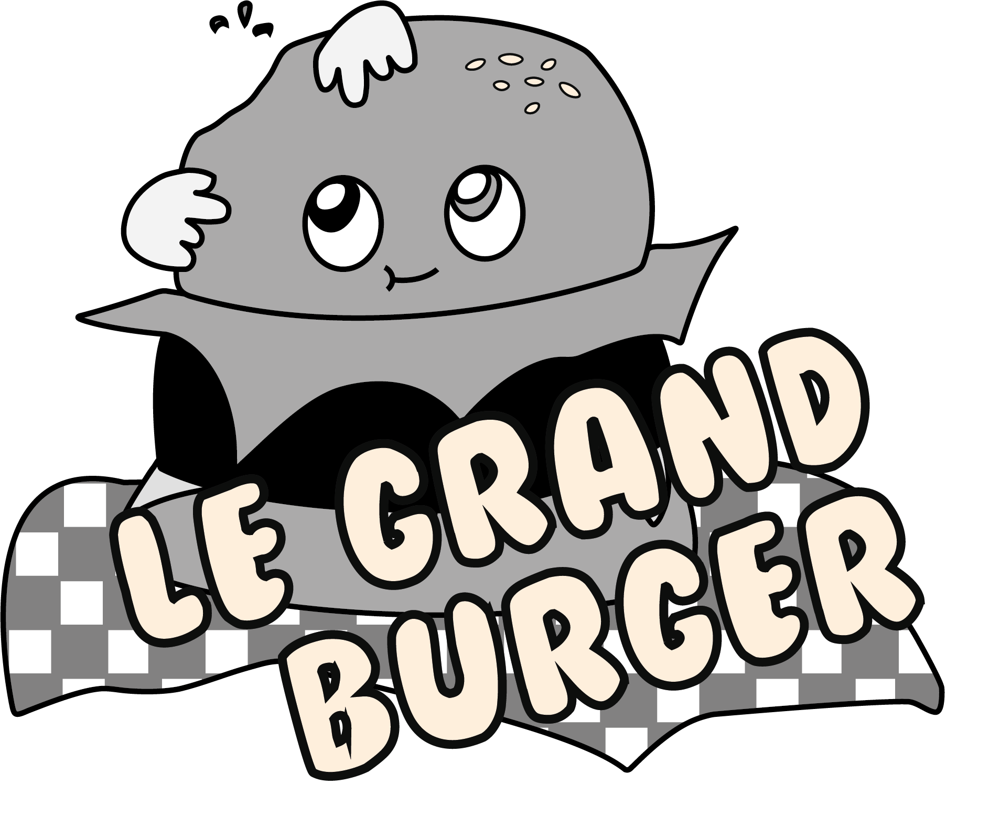
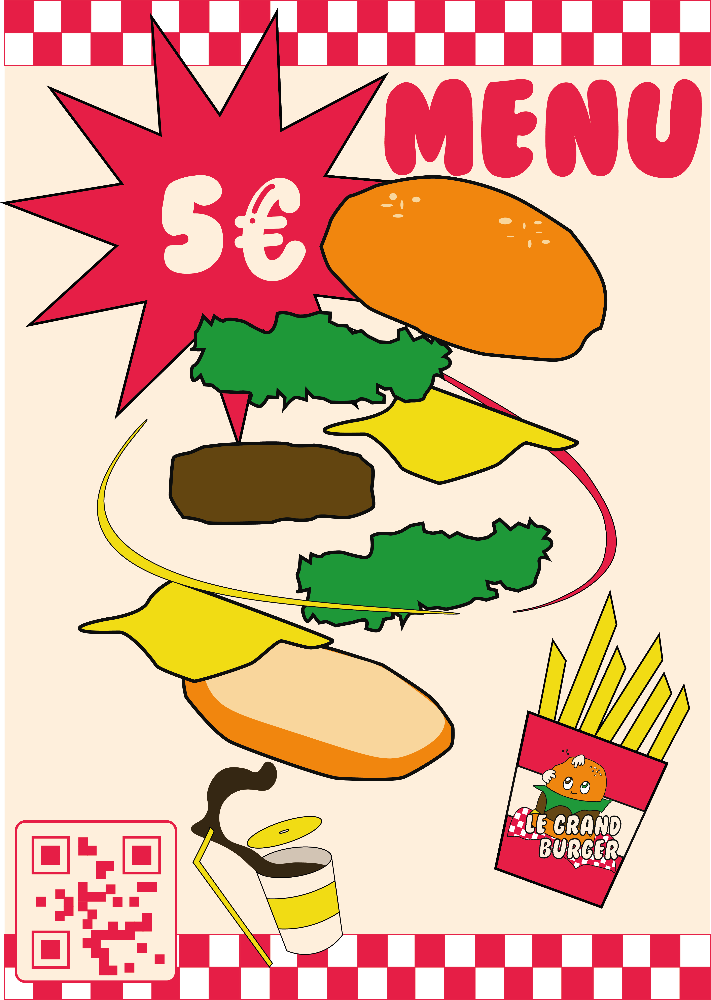
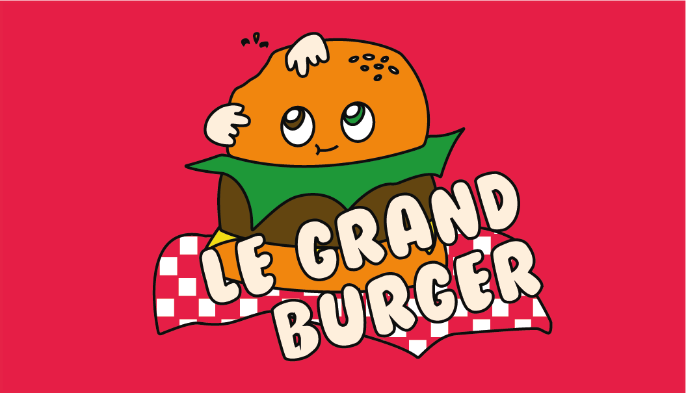
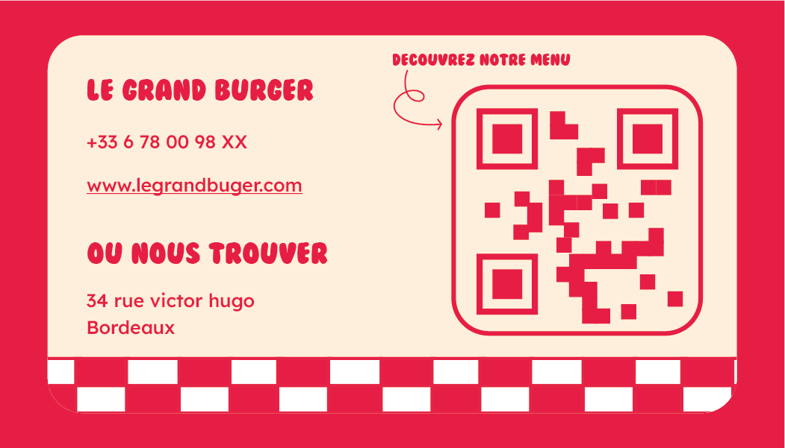

Identité visuelle
Créer une identité forte, appétissante et mémorable pour une marque de restauration rapide.
Projet : Le Grand Burger
Rôle : Graphic Designer, direction artistique, identité de marque
Période : Mars 2026
Outils : Illustrator, Photoshop
Livrables : Charte graphique, Logo, Affiche publicitaire, Carte de visite
Ce projet consiste à concevoir de A à Z l'identité visuelle d'une nouvelle marque de burger. L'enjeu était de créer un univers graphique cohérent et appétissant, capable de se démarquer dans un marché saturé.
De la charte graphique au logo, en passant par les supports de communication (affiche et carte de visite), chaque élément a été pensé pour raconter la même histoire et incarner les valeurs de la marque : authenticité, univers rétro et gourmandise.
La charte graphique centralise toutes les règles de l'identité visuelle de la marque : palette de couleurs, typographies, usages du logo, et applications sur les différents supports.

Charte graphique
Le logo est le cœur de l'identité. Il a été conçu pour être reconnaissable, déclinable sur tous les supports et porteur de l'ADN de la marque.

Version fond sombre
Version fond clair

Version monochrome
L'affiche est le premier contact du public avec la marque dans l'espace physique. Elle doit capter l'attention en une fraction de seconde, donner faim, et graver la marque dans l'esprit.

Affiche publicitaire
La carte de visite est un support physique important. Recto et verso racontent chacun une partie de l'histoire de la marque.

Face avant — Identité visuelle principale

Face arrière — Informations de contact
Ce projet m'a appris à construire une identité de marque cohérente, de la stratégie visuelle jusqu'aux déclinaisons sur les supports. Travailler sur une marque de restauration m'a poussée à explorer une variété de codes graphiques : contrastes, typographies, et les techniques de compositions.